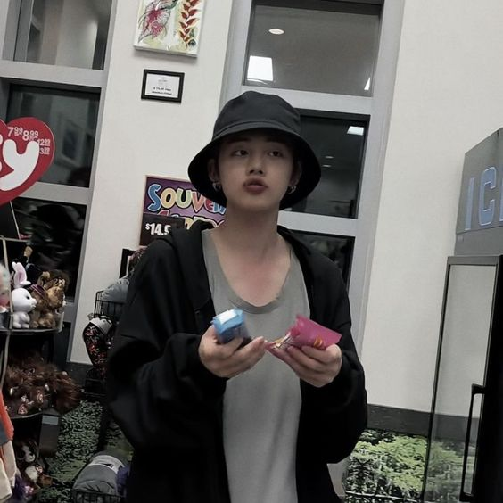
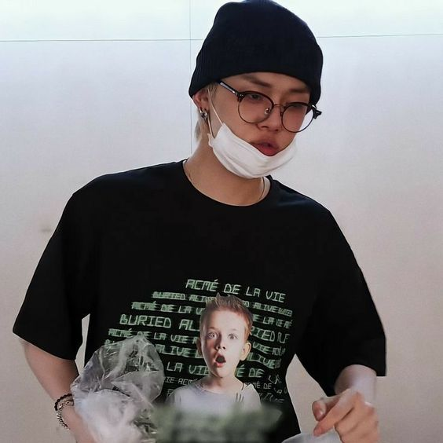

Yeonjun
♡
home = TXT


Quem é Yeonjun?
- Membro Oficial do Grupo Tomorrow By Together - TXT
- Nome artístico: Yeonjun (연준)
- Nome de nascimento: Choi Yeon Jun (최연준)
- Idade: 22 anos
- Posição: Rapper, Dançarino, Vocalista
- Aniversário: 13 de setembro de 1999
- Altura: 1.81 cm
- Signo do Zodíaco: Virgem
- MBTI: ENFP
- Zodíaco Chinês: Lebre / Coelho
- Tipo sanguíneo: A
- Emoji representativo: 🦊
- Nacionalidade: Coreano
Curiosidades sobre Yeonjun ♡
- Nasceu em Seul, porém se mudou para Seongnam, na Coréia do Sul durante o ensino
médio.
- Hobbies: Dançar, comer e jogar.
- É o membro mais velho do grupo.
- Yeonjun geralmente compra roupas de moda sem gênero.
- Fala quase fluentemente em inglês, pois já morou por 2 anos
nos EUA durante sua infância.
- Treinou para ser artista por 5 anos.
- Suas habilidades que mais se destacam são relacionadas a artes cênicas.
- Yeonjun adora o desenho Doraemon.
- Yeonjun tem o apelido de It Boy 4th Generation, o que significa que ele é
reconhecido como um dos idols mais completos da quarta geração do K-POP.